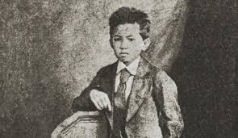
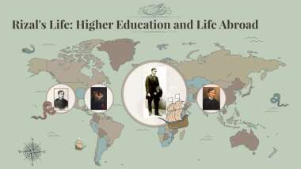

José Rizal's early education was greatly influenced by his mother, Teodora Alonso, who was a highly educated woman. She taught him the basics of reading, writing, and arithmetic at home before he attended formal schooling. At the age of three, Rizal began his formal education under the guidance of Justiniano Aquino Cruz, a tutor from Biñan, Laguna.In 1869, at the age of eight, Rizal traveled to Biñan to study under Justiniano Aquino Cruz, who was known for his reputation as a strict disciplinarian. During this time, Rizal's intellectual abilities became evident as he excelled in his studies. He showed a remarkable aptitude for learning and gained a deep appreciation for education.
After completing his studies in Biñan, Rizal continued his education in Manila. He attended Ateneo Municipal de Manila (now Ateneo de Manila University) for his secondary education, where he continued to excel academically. His time at Ateneo played a significant role in shaping his character and intellect, as he was exposed to a diverse range of subjects and ideas.

Higher Education: José Rizal pursued advanced education both locally and internationally. Initially enrolling in the University of Santo Tomas in Manila to study medicine, he faced discrimination, prompting him to move to Madrid's Universidad Central de Madrid for further medical studies. In addition to medicine, he explored humanities, actively participating in the intellectual and political circles of the Filipino diaspora in Europe.
While in Europe, Rizal specialized in ophthalmology at the University of Paris and later at the University of Heidelberg in Germany. His academic excellence was coupled with his engagement in various reformist and nationalist movements, advocating for the rights of Filipinos under Spanish colonial rule.
Rizal's higher education journey not only honed his medical expertise but also deepened his understanding of political, social, and cultural issues. These experiences abroad significantly influenced his views on nationalism, colonialism, and social justice, shaping his pivotal role as a revolutionary leader and national icon in the Philippines.